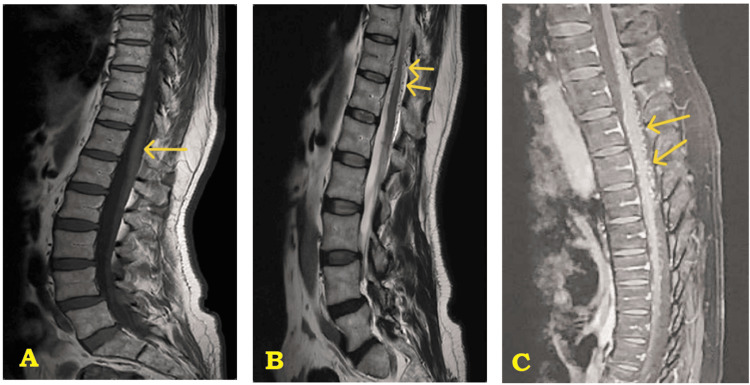
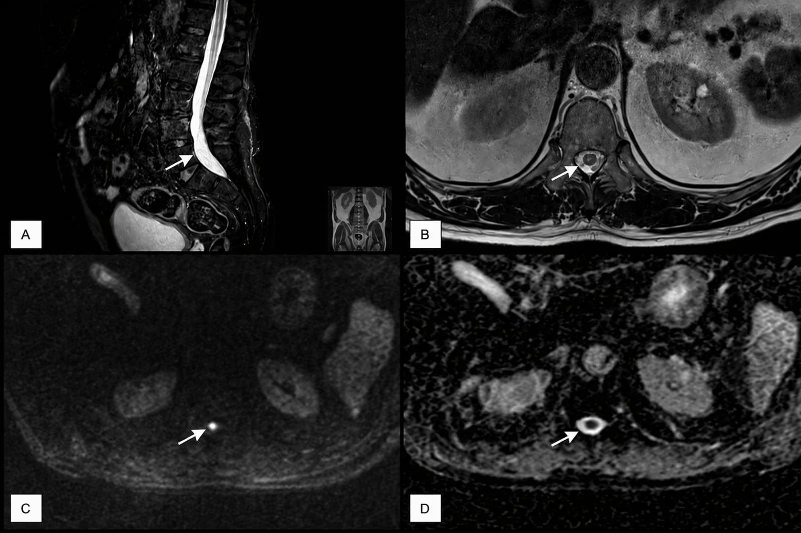
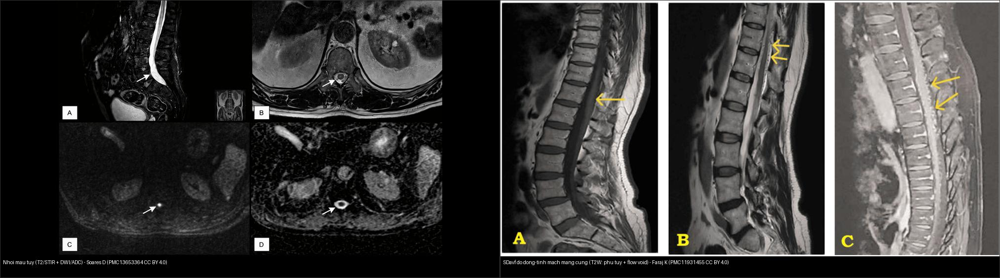
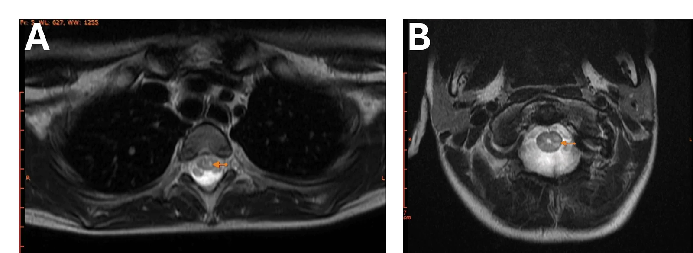
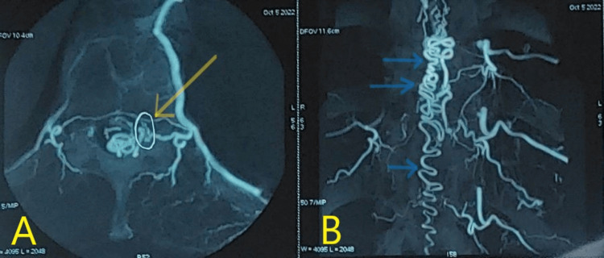
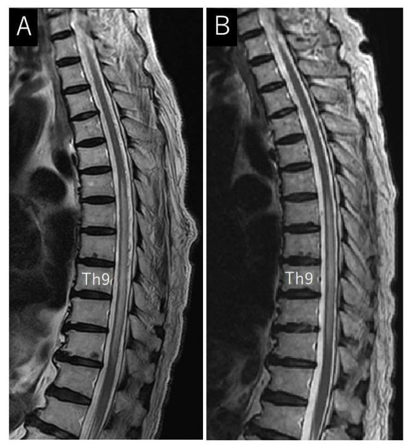
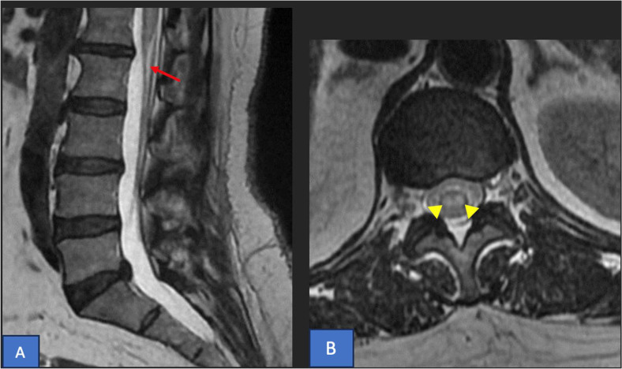
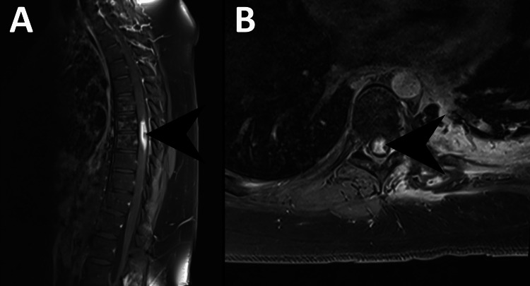

226 — Tủy mềm KHÔNG chấn thương: nhồi máu tủy, dò động–tĩnh mạch màng cứng (SDAVF), viêm tủy cấp/NMO & tủy mềm do xạ / Non-traumatic myelopathy
Tags: pattern:tuy-mem pattern:nhoi-mau-tuy pattern:di-dong-tinh-mach-mang-cung pattern:viem-tuy pattern:tuy-mem-do-xa vung:tuy-song score:ASIA protocol:MRI-cot-song protocol:DSA-tuy
Mức chắc chắn (certainty): tổng hợp y văn (literature synthesis) — tổng hợp từ nghiên cứu đoàn hệ + tổng quan (Tanaka T et al., J Clin Med 2024, PMC10856045), tổng quan đổi tên dấu "snake bite sign" (Arkoudis NA et al., World J Radiol 2025, PMC12308545) và các ca nguyên văn (verbatim case) giữ đúng tuổi – lâm sàng – chú thích gốc: SDAVF (Faraj K et al., Cureus 2025, PMC11931455), nhồi máu tủy (Soares D et al., Cureus 2026, PMC13653364; Jabbari C et al., Radiol Case Rep 2026, PMC12886534), NMOSD H-sign ở trẻ (Espinel-Porras JB et al., Cureus 2026, PMC13499930), tủy mềm do xạ (Iftekharuddin A et al., Cureus 2023, PMC10399638).
1. Tổng quan — vì sao "tủy mềm" không chấn thương lại khó
- "Tủy mềm" (myelopathy) là một hội chứng, không phải chẩn đoán. Biểu hiện lâm sàng (yếu, rối loạn cảm giác, rối loạn cơ vòng) chồng lấp giữa nguyên nhân mạch máu – viêm – chèn ép – do xạ. Chìa khóa nằm ở thời gian khởi phát + phân bố trên MRI.
- Bốn nhóm chính của bài này (đúng gamut của bài toán "tủy mềm không chấn thương"):
- Nhồi máu tủy (spinal cord infarction) — mạch máu, khởi phát đột ngột, đau, tổn thương 2/3 trước (lãnh thổ động mạch tủy trước).
- Dò động–tĩnh mạch màng cứng tủy (spinal dural arteriovenous fistula — SDAVF) — mạch máu, tiến triển mạn tính, ứ trệ tĩnh mạch; điều trị được nhưng hay bị chẩn đoán muộn.
- Viêm tủy cấp / rối loạn phổ mất myelin thị thần kinh (NMOSD) — tự miễn; viêm tủy ngang lan dài (LETM) ≥ 3 đốt + chất xám trung tâm.
- Tủy mềm do xạ (radiation myelopathy) — biến chứng muộn sau xạ trị, tiến triển không hồi phục.
- TẠI SAO mỗi nhóm cho một chân dung hình ảnh riêng (vật lý + mô bệnh):
- DWI/ADC: trong nhồi máu, phù tế bào (cytotoxic edema) làm nước khuếch tán hạn chế → DWI sáng + ADC tối (như đột quỵ não). Viêm/xơ thì ADC không tối kiểu này.
- Flow void (tín hiệu trống do dòng chảy): trong SDAVF, các tĩnh mạch tủy giãn, dòng chảy nhanh tạo các đường/túi tín hiệu TRỐNG hình con rắn ở mặt sau tủy trên T2/T1 — dấu hiệu "dòng chảy".
- T2 tăng lan dài + tăng sau tiêm: phù và ứ trệ tĩnh mạch (SDAVF) tăng tín hiệu T2 từ nón tủy ngược lên và ngấm thuốc dạng đốm/mảnh; NMOSD tổn thương chất xám trung tâm (đặc trưng H-sign) kèm tổn thương area postrema.
- Số liệu định lượng nằm lòng:
- SDAVF: là dị dạng mạch tủy gặp nhất; thường ở nam cao tuổi, vùng ngực–thắt lưng; shunt nằm trong màng cứng cạnh rễ (động mạch tủy–rễ → tĩnh mạch rễ) → tăng áp lực tĩnh mạch tủy → ứ trệ → tê yếu tiến triển + rối loạn cơ vòng (Faraj K et al., Cureus 2025, PMC11931455). Tổng quan 965 ca: nam 71,8–100%, tuổi trung bình 53,5–71, tỷ lệ chẩn đoán sai 17,5–100%, thời gian từ biểu hiện đầu đến chẩn đoán ~10–15 tháng, từ hình ảnh đầu tiên có đặc điểm DAVF 9,2–20,7 tháng (Tanaka T et al., J Clin Med 2024, PMC10856045).
- Nhồi máu tủy: nguyên nhân hiếm của tê yếu cấp nhưng di chứng/tử vong cao; lãnh thổ động mạch tủy trước chiếm phần lớn; ước tính ~1,2% của mọi đột quỵ, tần suất ~3,7/100.000, tử vong 9–23% (dùng số liệu tổng quan McDearman JC et al., J Clin Med 2026, PMC13512939 — xem bài
225). - NMOSD: tổn thương LETM ≥ 3 đốt liên tục, thường chất xám trung tâm (H-sign) + hội chứng area postrema (nôn/biếc ăn); gắn kháng thể AQP4-IgG; ca trẻ 9 tuổi sau COVID-19 có LETM C1–C6 và T2–T6 (Espinel-Porras JB et al., Cureus 2026, PMC13499930).
- Tủy mềm do xạ: tổn thương chất trắng tủy sau xạ, biểu hiện muộn (nhiều tuần–tháng); ca minh họa: tủy nhận liều tối đa 35 Gy, xuất hiện 9 tháng sau xạ, không hồi phục dù corticoid (Iftekharuddin A et al., Cureus 2023, PMC10399638).

SDAVF ngực–thắt lưng: (A) tăng tín hiệu T2 lan dài dọc tủy (mũi tên) do ứ trệ tĩnh mạch; (B) các đường tín hiệu TRỐNG hình con rắn (flow void) sau tủy — tĩnh mạch tủy giãn, dòng chảy nhanh; (C) chuỗi tín hiệu bất thường liên tục. Đây là bộ đôi chốt: phù lan dài + flow void = nghĩ SDAVF. Faraj K et al., Cureus 2025 (PMC11931455, Fig. 1), CC BY 4.0.
Nhồi máu tủy ngực–thắt lưng (thể động mạch tủy trước): (A) T2/STIR tăng tín hiệu trong tủy (mũi tên); (B) axial T2 tổn thương phần trước/trung tâm; (C) DWI hạn chế (chấm sáng); (D) ADC tương ứng thấp — bộ ba xác nhận thiếu máu (khác phù viêm). Soares D et al., Cureus 2026 (PMC13653364, Fig. 1), CC BY 4.0.2. Mẫu hình + chẩn đoán phân biệt theo thời gian & phân bố (Gamut)
Đọc hai trục cùng lúc: (1) tốc độ khởi phát (giờ–ngày vs tuần–tháng) và (2) phân bố trên mặt cắt ngang (trước / trung tâm / lan dài / cột sau):
- Khởi phát ĐỘT NGỘT trong giờ–ngày, có đau lưng dữ dội: nghĩ nhồi máu tủy (lãnh thổ động mạch tủy trước). Dấu chốt: DWI hạn chế + ADC tối + tổn thương 2/3 trước. Ở trẻ/người trẻ sau vận động: nhồi máu do thuyên tắc sụn xơ (fibrocartilaginous embolism) / "surfer's myelopathy".
- Tiến triển ÂM THẦM trong nhiều tuần–tháng, tê–yếu hai chân rồi rối loạn cơ vòng: nghĩ SDAVF. Dấu chốt: flow void + phù T2 lan dài từ nón tủy ngược lên + ngấm thuốc. Khi nghi ngờ → DSA là chuẩn xác định shunt.
- Khởi phát bán cấp, đau, tổn thương LETM: nghĩ viêm tủy cấp/NMOSD. Dấu chốt: LETM ≥ 3 đốt + chất xám trung tâm (H-sign) + area postrema; huyết thanh AQP4-IgG.
- Nhiều tháng sau xạ trị, tiến triển không hồi phục: nghĩ tủy mềm do xạ. Chú ý phân biệt với tái phát u/đè ép tủy (pseudoprogression) — cần bối cảnh lâm sàng + sinh thiết nếu không rõ.
- Gợi nhớ "MAVS — Mạch · Màng (tủy) · Viêm · Sạline": Mạch (infarction, SDAVF) · A‑cquired? Hãy nhớ gọn "V‑I‑R‑X": Vascular (nhồi máu/SDAVF) · Inflammatory (NMOSD/viêm tủy) · Radiation (xạ) · (X = loại trừ chèn ép u/áp-xe trước mọi hướng dùng thuốc).
3. Bảng so sánh phân biệt (ma trận đối chiếu)
| Thực thể (entity) | Hình ảnh điển hình (MRI) | Chốt vào (rule-in) | Chốt loại (rule-out) | Gợi ý xác nhận |
|---|---|---|---|---|
| Nhồi máu tủy (ASA) | T2/STIR tăng 2/3 trước, "owl's eyes/snake bite" ở sừng trước; DWI sáng/ADC tối; thường lệch/một bên | Khởi phát đột ngột + đau + DWI hạn chế + tổn thương phía trước | DWI/ADC không hạn chế + LETM vỏ trung tâm → nghĩ viêm, không phải nhồi máu | MRI có DWI/ADC sớm; tìm nguồn thuyên tắc (rung nhĩ, bóc tách) |
| SDAVF | T2 phù lan dài từ nón tủy lên + flow void (tĩnh mạch giãn) + ngấm thuốc đốm | Flow void + phù lan dài + tiến triển mạn ở người lớn tuổi | Không thấy flow void thì khó chốt — nhưng MRI bình thường KHÔNG loại trừ khi lâm sàng mạnh | DSA (chuẩn) + MRI tủy; điều trị nút mạch hoặc mổ cắt shunt |
| NMOSD / viêm tủy cấp | LETM ≥ 3 đốt, trung tâm chất xám (H-sign), lan vào cột bên; tổn thương area postrema (nôn) | LETM ≥ 3 đốt + H-sign + area postrema + AQP4-IgG (+) | Tổn thương < 3 đốt, bờ không lan dài → nghĩ MS/khác (xem 215) |
Huyết thanh AQP4-IgG (và MOG-IgG); MRI não/thị thần kinh |
| Tủy mềm do xạ | T2 tăng khu trú/liên tục trong tủy; ngấm thuốc sau tiêm; tương ứng trường chiếu xạ | Tiền sử xạ trị + tiến triển nhiều tháng + tổn thương trong trường xạ | Không có tiền sử xạ → loại trừ RM | Đối chiếu bản đồ liều xạ; loại trừ tái phát u (PET/sinh thiết) |

Trái — nhồi máu tủy: T2/STIR + DWI/ADC, tổn thương phía trước, DWI hạn chế (thiếu máu). Phải — SDAVF: phù T2 lan dài + flow void (ứ trệ tĩnh mạch). Cùng nhìn thấy "tủy sáng T2" nhưng cơ chế và DWI khác hẳn. Ảnh ghép letterbox giữ tỷ lệ (chỉ ghép 2 ảnh CC BY). Soares D (PMC13653364) + Faraj K (PMC11931455), CC BY 4.0.
NMOSD ở trẻ: T2 axial cho thấy "H-sign" — tăng tín hiệu T2 phủ khắp chất xám trung tâm tủy (không phải vỏ ngoài), phù hợp tổn thương chất xám trung tâm của viêm tủy ngang lan dài. Espinel-Porras JB et al., Cureus 2026 (PMC13499930, Fig. 3), CC BY 4.0.Dấu hiệu đặc trưng cần đọc đúng
- "Owl's eyes" = "snake eyes" = "snake bite sign": cùng hiện tượng hai điểm tăng T2 ở hai sừng trước của tủy (thương tổn chất xám vận động trong nhồi máu lãnh thổ ASA). Nhóm tác giả đề xuất gọi "snake bite sign" vì gợi cơ chế xâm nhập mạch và tránh nhầm với "mắt" trong bệnh khác (Arkoudis NA et al., World J Radiol 2025, PMC12308545). Không đặc hiệu — gặp trong nhiều bệnh cảnh; bối cảnh quyết định.
- Flow void quyết định SDAVF: nếu chỉ có "phù lan dài" mà bỏ qua dải tĩnh mạch giãn, rất dễ nhầm viêm tủy → điều trị sai hướng (Tanaka T et al., J Clin Med 2024, PMC10856045).
4. Protocol chụp + DSA & lưu đồ
- MRI toàn cột sống (whole-spine): T2W + STIR sagittal (bắt buộc tìm flow void và phù lan dài), T2W axial (định vị phân bố: trước/trung tâm/lan dài), DWI/ADC (chốt thiếu máu), T1W sau tiêm gadolinium (SDAVF/NMOSD/tủy mềm do xạ đều có thể ngấm), MRA tủy tầm soát.
- Bất tử về đọc phim: MRI bình thường hoặc không đặc hiệu KHÔNG loại trừ SDAVF khi lâm sàng mạnh về tiến triển mạn → DSA (digital subtraction angiography) là chuẩn vàng xác định shunt và mức; đồng thời là phương tiện điều trị (nút mạch).
- Phân độ lâm sàng: dùng ASIA/ISNCSCI (
223) để ghi mức và độ khiếm khuyết (thần kinh, không theo hình ảnh). - Xử trí sơ bộ theo nhóm: nhồi máu tủy — điều trị hỗ trợ/kiểm soát yếu tố nguy cơ mạch máu; SDAVF — nút mạch/ cắt shunt (có thể phục hồi chức năng vận động, dáng đi, đi tiểu nếu chẩn đoán sớm); NMOSD — corticoid liều cao ± lọc huyết tương + ức chế miễn dịch (AQP4); tủy mềm do xạ — hỗ trợ + corticoid (không hồi phục).

Chụp mạch máu tủy (DSA) trước điều trị: (A) hình axial cho thấy shunt giữa động mạch tủy–rễ (nhánh từ động mạch liên sườn) và tĩnh mạch rễ; (B) hình chụp mạch xác định mức. DSA là chuẩn vàng bởi không chỉ chẩn đoán mà còn để nút mạch. Faraj K et al., Cureus 2025 (PMC11931455, Fig. 2), CC BY 4.0.
So sánh trước–sau điều trị: (A) trước — T2W sagittal phù tăng tín hiệu lan dài trong tủy; (B) sau — phù thoái triển và các tĩnh mạch giãn (flow void) mất đi. Theo dõi bằng MRI T2 là cách đánh giá đáp ứng sau nút mạch/mổ. Tanaka T et al., J Clin Med 2024 (PMC10856045, Fig. 3), CC BY 4.0.flowchart TD
A[Tủy mềm KHÔNG chấn thương] --> B{Thời gian khởi phát?}
B -->|Giờ-ngày, có đau| C{Nghĩ nhồi máu tủy}
C --> D[MRI: DWI/ADC + T2 toàn cột sống]
D --> D1{DWI hạn chế + tổn thương 2/3 trước?}
D1 -->|Có| E[Nhồi máu tủy: điều trị hỗ trợ, soát yếu tố mạch]
D1 -->|Không| F[Xem nhánh viêm/mạch khác]
B -->|Tuần-tháng, âm thầm| G{MRI có flow void + phù lan dài?}
G -->|Có| H[SDAVF: DSA chẩn đoán -> nút mạch hoặc cắt shunt]
G -->|Không| I{Có LETM >= 3 đốt trung tâm?}
I -->|Có| J[NMOSD/viêm tủy: AQP4-IgG -> corticoid + ức chế miễn dịch]
I -->|Không| K{Tiền sử xạ trị trong trường chiếu?}
K -->|Có| L[Tủy mềm do xạ: điều trị hỗ trợ + corticoid; loại trừ tái phát u]
K -->|Không| M[Loại trừ chèn ép/nhiễm trùng/u; mở rộng xét nghiệm]
E --> N[Chấm ASIA + phục hồi chức năng]
H --> N
J --> N
L --> N
M --> N
5. Biến thể bình thường và cạm bẫy
- Cạm bẫy "tăng tín hiệu T2 = viêm": trong huyết khối/fistula, phù ứ trệ trông rất giống viêm tủy. Luôn tìm flow void + mức độ lan từ nón tủy. Nếu bỏ sót, bệnh nhân SDAVF mất cửa sổ vàng phục hồi (phù lan dài càng lâu, hồi phục càng kém) (Tanaka T et al., PMC10856045).
- Cạm bẫy "owl's eyes là đặc hiệu cho nhồi máu": không — dấu này cũng gặp trong nhiều bệnh cảnh tủy; hãy gọi nó là snake bite sign và dựa vào DWI/ADC + bối cảnh khởi phát đột ngột (Arkoudis NA et al., PMC12308545).
- Cạm bẫy "DWI tủy khó, thấy tối là âm": DWI cột sống có nhiễu do dòng dịch não tủy và chuyển động; DWI có thể âm tính sớm. Không loại trừ nhồi máu chỉ vì DWI "chưa dương".
- Cạm bẫy "tủy mềm do xạ vs tái phát u": cả hai cùng nằm trong trường xạ, đều ngấm thuốc — cần bản đồ liều, diễn tiến thời gian, và PET/sinh thiết khi không phân định được.
- Cạm bẫy "bỏ qua chèn ép": trước khi kết luận nguyên nhân nội tủy, bắt buộc loại trừ chèn ép ngoài tủy (di căn, áp-xe màng cứng, thoát vị) trên toàn cột sống (nối
220,222). - Cạm bẫy "NMOSD ≠ MS": phác đồ khác nhau: NMOSD tránh một số thuốc đặc hiệu MS — cần AQP4-IgG trước khi xử trí dài hạn (nối
215).
6. Tự lượng giá — Blind Quiz (ảnh trơn ngoài, đáp án trong)
Ca 1 — Nữ 55 tuổi, đau lưng dữ dội khi làm việc nhà, liệt hai chân trong vài giờ. Đọc T2 axial cột sống:

- Gợi ý lâm sàng (clinical context): đau khởi phát đột ngột, liệt nhanh trong giờ, sau đó phát hiện rung nhĩ mới.
- Câu hỏi: Dấu hiệu trên axial tên gì? Phân bố tổn thương ở vùng nào? Cơ chế?
Bấm để hiện đáp án (findings + chẩn đoán)
- Dấu hiệu (findings): (A) T2W sagittal tăng tín hiệu đầu dưới tủy/nón tủy (mũi tên đỏ); (B) axial T2 hai điểm sáng ở hai sừng trước → dấu "owl's eyes"/"snake bite".
- Chẩn đoán (diagnosis): nhồi máu tủy lãnh thổ động mạch tủy trước (ASA); cơ chế thuyên tắc từ rung nhĩ mới. Yêu cầu: DWI/ADC xác nhận, soát yếu tố mạch máu (rung nhĩ, bóc tách).
- Nguồn ảnh: Jabbari C et al., Radiol Case Rep 2026 (PMC12886534, Fig. 1), CC BY-NC-ND 4.0 — nguyên bản, không crop/ghép.
Ca 2 — Bệnh nhân tăng tín hiệu T2 lan dài trong tủy + "đường sáng" ngoằn ngoèo sau tủy. Đọc MRI:
- Gợi ý lâm sàng: nam lớn tuổi, tê–yếu hai chân tiến triển nhiều tháng, rối loạn cơ vòng.
- Câu hỏi: Dấu hiệu "đường sáng" sau tủy là gì? Chẩn đoán? Bước xác nhận và điều trị?
Bấm để hiện đáp án (findings + chẩn đoán)
- Dấu hiệu (findings): phù tăng tín hiệu T2 lan dài trong tủy + nhiều tĩnh mạch giãn (flow void) ở mặt sau tủy.
- Chẩn đoán (diagnosis): SDAVF — ứ trệ tĩnh mạch tủy. Xác nhận bằng DSA; điều trị nút mạch/cắt shunt. MRI phù lan dài + flow void là bộ đôi chốt; chẩn đoán muộn 10–15 tháng làm giảm khả năng hồi phục.
- Nguồn ảnh: Faraj K et al., Cureus 2025 (PMC11931455, Fig. 1), CC BY 4.0.
Ca 3 — Bệnh nhân nhiều tháng sau xạ trị ngực, yếu–tê chi dưới. Đọc MRI sau tiêm:

- Gợi ý lâm sàng: tiền sử xạ trị vào ngực, triệu chứng xuất hiện muộn (nhiều tháng).
- Câu hỏi: Dấu hiệu chính? Phân biệt với gì? Tiên lượng?
Bấm để hiện đáp án (findings + chẩn đoán)
- Dấu hiệu (findings): ngấm thuốc sau tiêm dọc tủy (mũi tên) trong trường chiếu xạ; T2 tăng tín hiệu tương ứng.
- Chẩn đoán (diagnosis): tủy mềm do xạ (radiation myelopathy) — ca minh họa tủy nhận liều tối đa 35 Gy, xuất hiện 9 tháng sau xạ; điều trị bằng corticoid giảm phù nhưng không hồi phục. Cần loại trừ tái phát u/đè ép.
- Nguồn ảnh: Iftekharuddin A et al., Cureus 2023 (PMC10399638, Fig. 3), CC BY 3.0.
Ca 4 — Trẻ sau COVID-19, nôn kéo dài rồi yếu chi + LETM. Đọc T2 axial:
- Gợi ý lâm sàng: hội chứng area postrema (nôn) + tổn thương tủy lan dài.
- Câu hỏi: Dấu hiệu này tên gì? Vùng tổn thương? Hướng xét nghiệm/điều trị?
Bấm để hiện đáp án (findings + chẩn đoán)
- Dấu hiệu (findings): "H-sign" — tăng tín hiệu T2 phủ chất xám trung tâm tủy; kèm LETM C1–C6 và T2–T6.
- Chẩn đoán (diagnosis): NMOSD (AQP4-IgG dương trong ca gốc). Xử trí: corticoid liều cao ± lọc huyết tương + ức chế miễn dịch; phân biệt với MS (xem
215). - Nguồn ảnh: Espinel-Porras JB et al., Cureus 2026 (PMC13499930, Fig. 3), CC BY 4.0.
Bài liên quan chéo
- 200 – Tổng quan Hệ Thần kinh (bảng DDx)
- 223 – Chấn thương tủy sống: ASIA & SCIWORA (chấm AIS, phù vs xuất huyết tủy)
- 225 – Hội chứng tủy không hoàn toàn (tủy trước/ASA, tủy trung tâm)
- 220 – Ống sống 3 khoang (loại trừ chèn ép ngoài tủy)
- 215 – Bệnh lý mất myelin (MS/NMOSD/ADEM) (LETM, AQP4-IgG)
- 222 – Viêm đốt sống (áp-xe màng cứng/viêm đĩa–đốt sống)
Ảnh
images/226_sdavf_MRI_PMC11931455-Fig1-CCBY.jpg— SDAVF: phù lan dài + flow void (CC BY 4.0).images/226_sdavf_DSA_PMC11931455-Fig2-CCBY.jpg— DSA tủy: shunt (CC BY 4.0).images/226_sdavf-truoc-sau_MRI_PMC10856045-Fig3-CCBY.jpg— SDAVF trước–sau điều trị (CC BY 4.0).images/226_nhoi-mau-tuy_MRI_PMC13653364-Fig1-CCBY.webp— nhồi máu tủy T2/STIR + DWI/ADC (CC BY 4.0).images/226_mat-cat-chuot_MRI_PMC12886534-Fig1-CCBYNCND.jpg— owl's eyes ở nón tủy (CC BY-NC-ND 4.0, nguyên bản).images/226_dau-ran-can_MRI_PMC12308545-Fig1-CCBYNC.jpg— snake bite sign (CC BY-NC 4.0, nguyên bản).images/226_nmo-h-sign_MRI_PMC13499930-Fig3-CCBY.webp— H-sign trong NMOSD (CC BY 4.0).images/226_tuy-mem-do-xa_MRI_PMC10399638-Fig3-CCBY.jpg— tủy mềm do xạ (CC BY 3.0).images/composite_226_nhoi-mau-tuy-vs-sdavf.jpg— ảnh ghép so sánh nhồi máu tủy vs SDAVF (chỉ ghép ảnh CC BY).- Nguồn + giấy phép đầy đủ:
images/CREDITS.md; link gốc:sources.md.
Không dùng để chẩn đoán độc lập khi chưa có người hướng dẫn.